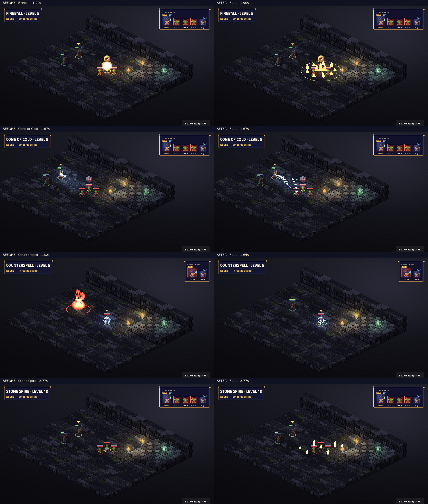

Attack · Level 1
Weapon attack, weapon range: weapon damage
Native TV capture: before on the left, after on the right. Fixed map and seed; real engine events and BeatPlayer. Level labels are the character’s unlock level. Videos preserve the complete cast, impact, effect tails and camera settle. Posters align the impact for comparison.
Frozen before: 15ecd7a16bc0c094c97028099cc5b70aa4682bc3. Review notes and limitations · Frame measurements · Actual beat timings
Complete 49-sample contact sheet · Native cast close-up

Static modifiers have no standalone proc. Every ability and visible proc must have a real fixture for this capture to succeed.
| Name | Subclass | Level | Kind | Cut-in | Before keys | After keys |
|---|---|---|---|---|---|---|
| Acid Splash | Base class | 1 | ability | none | characters.cast · fx.acid.acid | characters.wizard_bolt · fx.wizard_acid_splash.acid |
| Arcane Recovery | Base class | 1 | ability | short | characters.cast · fx.aura.arcane | characters.wizard_weave · fx.wizard_arcane_recovery.arcane |
| Burning Hands | Base class | 1 | ability | full | characters.summon · signature.draconic_dragon_breath.fire | characters.wizard_nova · fx.wizard_burning_hands.fire |
| Chill Touch | Base class | 1 | ability | none | characters.point · fx.necrotic.grave | characters.wizard_bolt · fx.wizard_chill_touch.grave |
| Chromatic Orb | Base class | 1 | ability | short | characters.point · fx.shock.storm · projectiles.lightning | characters.wizard_bolt · fx.wizard_chromatic_orb.storm · fx.wizard_chromatic_orb_shot.storm |
| Fire Bolt | Base class | 1 | ability | none | characters.point · fx.flames.fire · projectiles.fireball | characters.wizard_bolt · fx.wizard_fire_bolt.fire · fx.wizard_fire_bolt_shot.fire |
| Grease | Base class | 1 | ability | short | characters.channel · fx.circle.arcane | characters.wizard_bolt · fx.wizard_grease.arcane |
| Mage Armor | Base class | 1 | ability | short | characters.buff · fx.ward.arcane | characters.wizard_ward · fx.wizard_mage_armor.arcane |
| Magic Missile | Base class | 1 | ability | short | characters.point · fx.force.force · projectiles.missile | characters.wizard_bolt · fx.wizard_magic_missile.force · fx.wizard_magic_missile_shot.force |
| Poison Spray | Base class | 1 | ability | none | characters.point · fx.toxin.venom | characters.wizard_bolt · fx.wizard_poison_spray.venom |
| Ray of Frost | Base class | 1 | ability | none | characters.point · fx.frost.frost · projectiles.ice | characters.wizard_bolt · fx.wizard_ray_of_frost.frost · fx.wizard_ray_of_frost_shot.frost |
| Ray of Sickness | Base class | 1 | ability | short | characters.point · fx.toxin.sickness · projectiles.poison | characters.wizard_bolt · fx.wizard_ray_of_sickness.sickness · fx.wizard_ray_of_sickness_shot.sickness |
| Shield | Base class | 1 | ability | none | characters.block · fx.shield.arcane | characters.wizard_ward · fx.wizard_shield.arcane |
| Shocking Grasp | Base class | 1 | ability | none | characters.point · fx.shock.storm | characters.wizard_bolt · fx.wizard_shocking_grasp.storm |
| Sleep | Base class | 1 | ability | short | characters.cast · fx.misty.fey | characters.wizard_bolt · fx.wizard_sleep.fey |
| Thunderwave | Base class | 1 | ability | short | characters.cast · fx.thunder.thunder | characters.wizard_bolt · fx.wizard_thunderwave.thunder |
| Blur | Base class | 3 | ability | short | characters.channel · fx.misty.mist | characters.wizard_ward · fx.wizard_blur.mist |
| Hold Person | Base class | 3 | ability | short | characters.cast · fx.hold.arcane | characters.wizard_weave · fx.wizard_hold_person.arcane |
| Invisibility | Base class | 3 | ability | short | characters.buff · fx.misty.mist | characters.wizard_ward · fx.wizard_invisibility.mist |
| Misty Step | Base class | 3 | ability | short | characters.cast · fx.misty.mist | characters.wizard_bolt · fx.wizard_misty_step.mist |
| Scorching Ray | Base class | 3 | ability | short | characters.point · fx.flames.fire · projectiles.fireball | characters.wizard_bolt · fx.wizard_scorching_ray.fire · fx.wizard_scorching_ray_shot.fire |
| Shatter | Base class | 3 | ability | full | characters.cast · signature.spell_shatter.thunder | characters.wizard_bolt · fx.wizard_shatter.thunder |
| Web | Base class | 3 | ability | short | characters.channel · fx.web.silk | characters.wizard_weave · fx.wizard_web.silk |
| Counterspell | Base class | 5 | ability | none | characters.point · fx.dispel.arcane | characters.wizard_bolt · fx.wizard_counterspell.arcane |
| Dispel Magic | Base class | 5 | ability | short | characters.channel · fx.dispel.arcane | characters.wizard_weave · fx.wizard_dispel_magic.arcane |
| Fireball | Base class | 5 | ability | full | characters.summon · signature.spell_fireball.fire · projectiles.fireball | characters.wizard_nova · fx.wizard_fireball.fire · fx.wizard_fireball_shot.fire |
| Haste | Base class | 5 | ability | full | characters.buff · signature.chronomancer_time_dial.haste | characters.wizard_weave · fx.wizard_haste.haste |
| Hypnotic Pattern | Base class | 5 | ability | short | characters.summon · fx.misty.fey | characters.wizard_nova · fx.wizard_hypnotic_pattern.psychic |
| Lightning Bolt | Base class | 5 | ability | full | characters.summon · signature.spell_lightning_bolt.storm | characters.wizard_nova · fx.wizard_lightning_bolt.storm |
| Slow | Base class | 5 | ability | full | characters.summon · signature.chronomancer_time_dial.slow | characters.wizard_weave · fx.wizard_slow.slow |
| Banishment | Base class | 7 | ability | short | characters.cast · fx.pillar.arcane | characters.wizard_weave · fx.wizard_banishment.arcane |
| Blight | Base class | 7 | ability | full | characters.cast · signature.spell_blight.rot | characters.wizard_bolt · fx.wizard_blight.grave |
| Greater Invisibility | Base class | 7 | ability | short | characters.buff · fx.misty.mist | characters.wizard_ward · fx.wizard_greater_invisibility.mist |
| Ice Storm | Base class | 7 | ability | short | characters.summon · fx.ice.frost | characters.wizard_nova · fx.wizard_ice_storm.frost |
| Wall of Fire | Base class | 7 | ability | short | characters.summon · fx.flames.fire | characters.wizard_bolt · fx.wizard_wall_of_fire.fire |
| Cloudkill | Base class | 9 | ability | full | characters.summon · signature.spell_cloudkill.poison | characters.wizard_nova · fx.wizard_cloudkill.venom |
| Cone of Cold | Base class | 9 | ability | full | characters.summon · signature.spell_cone_of_cold.frost | characters.wizard_nova · fx.wizard_cone_of_cold.frost |
| Hold Monster | Base class | 9 | ability | short | characters.cast · fx.hold.arcane | characters.wizard_weave · fx.wizard_hold_monster.arcane |
| Temporal Awareness | wizard.chronomancer | 3 | static | none | No art key | No art key |
| Time Shift | wizard.chronomancer | 3 | ability | full | characters.cast · signature.chronomancer_time_dial.haste | characters.wizard_weave · fx.wizard_time_shift.haste |
| Accelerate | wizard.chronomancer | 6 | ability | full | characters.buff · signature.chronomancer_time_dial.haste | characters.wizard_bolt · fx.wizard_accelerate.haste |
| Temporal Stasis | wizard.chronomancer | 10 | ability | full | characters.point · signature.chronomancer_time_dial.slow | characters.wizard_weave · fx.wizard_temporal_stasis.slow |
| Sculpted Nova | wizard.evoker | 3 | ability | full | characters.summon · signature.evoker_sculpted_nova.fire | characters.wizard_nova · fx.wizard_sculpted_nova.fire |
| Empowered Evocation | wizard.evoker | 6 | proc | none | No art key | fx.wizard_empowered_evocation.force |
| Sculpted Inferno | wizard.evoker | 10 | ability | full | characters.summon · signature.evoker_sculpted_nova.fire | characters.wizard_nova · fx.wizard_sculpted_inferno.fire |
| Raise Earth | wizard.geomancer | 3 | ability | full | characters.cast · signature.geomancer_raise.grass | characters.wizard_stomp · fx.wizard_raise_earth.earth |
| Sink Earth | wizard.geomancer | 3 | ability | full | characters.cast · signature.geomancer_lower.grass | characters.wizard_stomp · fx.wizard_sink_earth.earth |
| Earthen Ward | wizard.geomancer | 6 | static | none | No art key | No art key |
| Tremor | wizard.geomancer | 6 | ability | full | characters.slam · signature.geomancer_lower.grass | characters.wizard_stomp · fx.wizard_tremor.earth |
| Stone Spire | wizard.geomancer | 10 | ability | full | characters.slam · signature.geomancer_raise.grass | characters.wizard_stomp · fx.wizard_stone_spire.earth |
Weapon attack, weapon range: weapon damage
Dex save, 6 tiles, burst 1: 1d6 acid
Self: you gain 1 mana
Dex save, self, cone 3: 3d6 fire; half damage on a save
Spell attack, 1 tile: 1d10 necrotic
Spell attack, 6 tiles: 3d8 lightning
Spell attack, 6 tiles: 1d10 fire
6 tiles, burst 1: creates a grease zone (burst 1) for 10 rounds, difficult terrain; units inside: When you enter a tile, on yourself: Dex save (target is Prone); Dex save (target is Prone)
1 tile: target is Mage Armor
6 tiles: 3 times: 1d4+1 force
Spell attack, 4 tiles: 1d12 poison
Spell attack, 6 tiles: 1d8 cold; target gets -1 Move for 1 round
Spell attack, 6 tiles: 2d8 poison; Con save (target is Poisoned for 1 round)
Real reaction to Attack; fixture seed 7.
Spell attack, 1 tile: 1d8 lightning
Wis save, 6 tiles, burst 1: target is Unconscious until saved
Con save, self, burst 1: 2d8 thunder; pushes target 1 tile away; half damage on a save
Self: you are attacked with disadvantage for 10 rounds
6 tiles: if the target is humanoid, Wis save (target is Paralysed until saved)
1 tile: target is Hidden — The target can't be seen until it attacks.
4 tiles: teleports you to the aimed tile, up to 4 tiles away
6 tiles: 3 times: spell attack (2d6 fire)
Con save, 6 tiles, burst 1: 2d8 thunder; half damage on a save
6 tiles, burst 1: creates a web zone (burst 1) for the battle, difficult terrain, ends if you lose concentration; units inside: When you enter a tile, on yourself: Dex save (target is Restrained until saved); Dex save (target is Restrained until saved)
Real reaction to Fireball; fixture seed 7.
6 tiles: ends concentration; ends magical conditions on target
Dex save, 6 tiles, burst 2: 6d6 fire; half damage on a save — Game balance: 6d6 per target instead of SRD 8d6.
4 tiles: target is Hasted for 10 rounds
Wis save, 6 tiles, burst 2: target is Incapacitated until saved — A twisting pattern of colours leaves those who see it charmed and dazed.
Dex save, self, line 10: 6d6 lightning; half damage on a save — Game balance: 6d6 per target, matching Fireball.
Wis save, 6 tiles, burst 2: target is Slowed until saved
Cha save, 6 tiles: target is Incapacitated until saved — The target is cast into a harmless elsewhere, out of the fight until it fights its way back.
Con save, 4 tiles: 8d8 necrotic; half damage on a save
1 tile: target is Invisible for 10 rounds
6 tiles, burst 2: creates a ice zone (burst 2) for 1 round, difficult terrain; Dex save (2d8 bludgeoning; 4d6 cold; half damage on a save)
6 tiles, ring 2: creates a fire zone (ring 2) for 10 rounds, ends if you lose concentration; units inside: At the start of your turn, on yourself: Dex save (1d8 fire; half damage on a save); Dex save (5d8 fire; half damage on a save) — Game balance: the initial hit deals 5d8; ongoing damage is 1d8 per turn instead of SRD 5d8.
6 tiles, burst 2: creates a poison zone (burst 2) for 10 rounds, ends if you lose concentration; units inside: At the start of your turn, on yourself: Con save (5d8 poison; half damage on a save); Con save (6d8 poison; half damage on a save) — Game balance: the initial hit deals 6d8 poison; ongoing damage is the SRD 5d8.
Con save, self, cone 7: 8d8 cold; half damage on a save
Wis save, 6 tiles: target is Paralysed until saved
Chronomancer: 6 tiles: swaps target's place with the unit 1 place after it in the turn order
Chronomancer: 6 tiles: moves target 2 places earlier in the turn order; target gets +1 AC and +1 Move for 2 rounds
Chronomancer: Wis save, 6 tiles: 4d8 force; delays target by 3 places in the turn order; target is Slowed for 2 rounds; half damage on a save
Evoker: Dex save, 6 tiles, burst 2: 2d6 fire; half damage on a save — You shape the blast around your allies: it strikes only foes.
Visible passive triggered during Fire Bolt. Spell attack, 6 tiles: 2d10 fire
Evoker: Dex save, 6 tiles, burst 3: 8d6 fire; half damage on a save — Once per battle you pour everything into one sculpted storm of fire that spares your allies.
Geomancer: 6 tiles: raises the terrain (single tile) by 2
Geomancer: 6 tiles: sinks the terrain (single tile) by 2
Geomancer: Dex save, 6 tiles, burst 1: 3d8 bludgeoning; target is Prone; half damage on a save
Geomancer: 6 tiles, burst 1: raises the terrain (burst 1) by 2; Dex save (6d8 bludgeoning; target is Prone; half damage on a save)